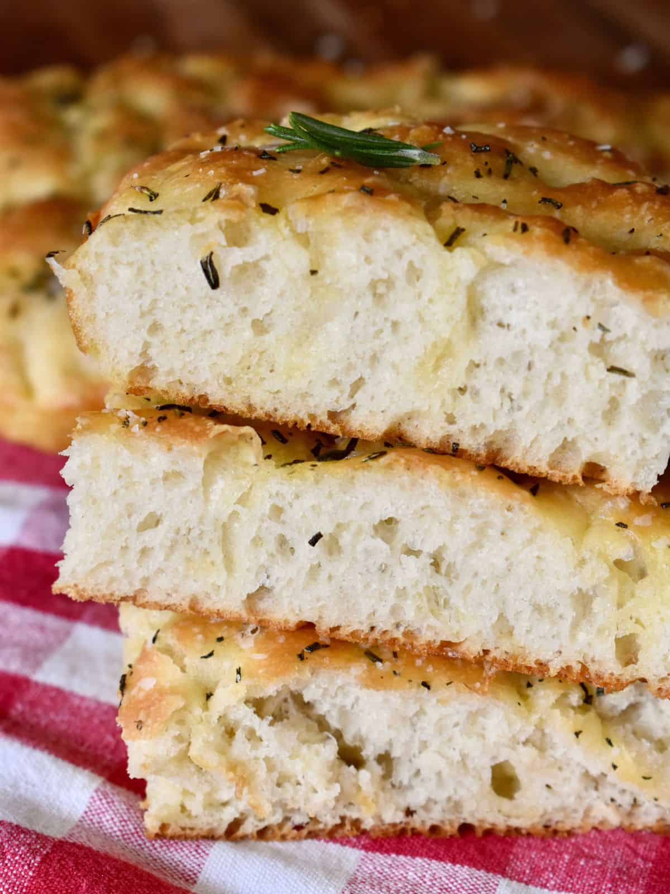

Easy Focaccia Bread

Description:
Soft, springy and so delicious. This simple recipe requires more time than effort.
You can dress it up anyway you like, but we prefer just the basic salt and rosemary. Lots of it.
Ingredients:
- 1 /12 cups warm water, just comfy warm from the tap
- 2 1/2 tsp active dry yeast
- 2 tsp sugar
- 420 grams of all purpose flour
- 6 tbsp olive oil, the good stuff
- 1 tsp salt + more for topping
- 1 - 2 tbsp fresh rosemary, chopped
Steps:
- In a large bowl; Mix the warm water with the sugar and yeast. Mix until dissolved and leave covered for
about 15 minutes. Or until foamy.
- Mix in 2 tbsp olive oil, flour and salt. Mix until well combined, it will be very sticky.
- At this point you can move the dough to a fresh bowl with a light coat of oil but I don't bother. Set aside
somewhere warm for 1 hour, or until doubled in size.
- Prepare a 9x13 baking pan with parchment and 2 tbsp olive oil. Turn out the dough onto the parchment
and gently stretch across and into the corners.
- Put it aside, covered with a towel and somewhere warm, for another 45 minutes.
- Meanwhile: chop the rosemary, I use scissors, and pre-heat the oven to 425 degrees.
- Next get that last 2 tbsp of olive oil and pour it over the top. Then using your fingers, press into
the dough all across the surface. Be sure to press to the bottom.
- Sprinkle with plenty of salt and the chopped rosemary.
- Bake for about 20-23 minutes. Then let cool for 10 minutes in the pan.
- Enjoy.
Notes:
If you are lazy like me, and don't move the dough in step 3, you can get the dough out easier using a soft
plastic spatula. I usually use it to spread the oil on the parchment so it's ready for getting the dough out.
Loosen one side of the bowl before tipping it out and loosening the rest as it falls.
At this point it also helps to dip your fingers in the excess oil in the pan before stretching it out to cover
the pan. Try not to flatten it down during this step, more just pull across the top.